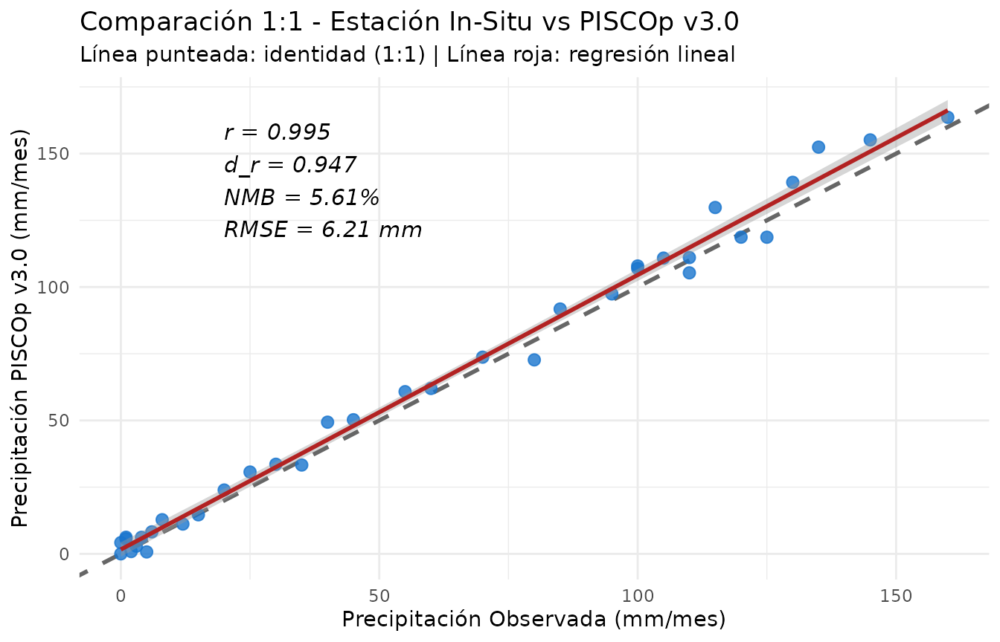
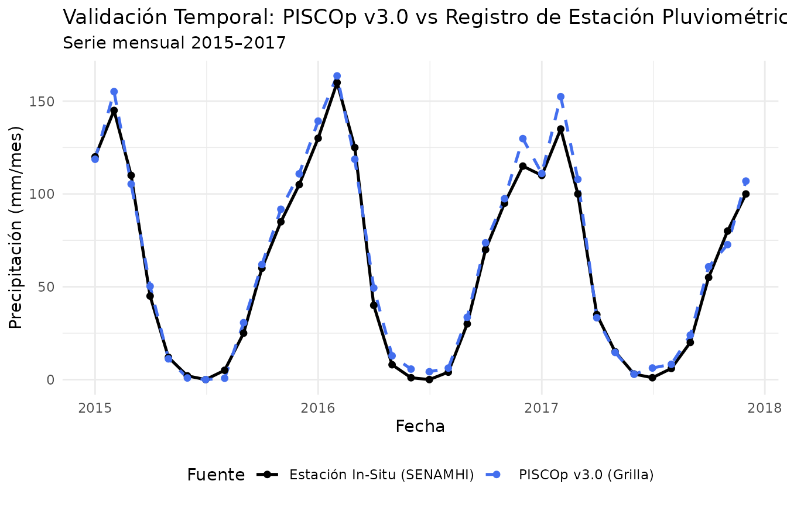

4. Validación de Grillas contra Observaciones In-Situ
Source:vignettes/validation-metrics.Rmd
validation-metrics.RmdIntroducción
La evaluación de la calidad de los productos grillados frente a observaciones pluviométricas o termométricas in-situ es una etapa crítica en cualquier estudio hidroclimático. En el informe oficial de validación de PISCOp v3.0 (Gutierrez & Lavado-Casimiro, 2025), el SENAMHI adoptó un conjunto riguroso de métricas estadísticas fundamentadas en la literatura meteorológica (Willmott et al., 2012).
El paquete rpisco implementa estas
métricas especializadas en funciones modulares y en la función
integradora pisco_metrics().
1. Métricas Estadísticas del SENAMHI
Las principales métricas implementadas en rpisco
son:
- Coeficiente de Correlación de Pearson ( o COR): Mide la concordancia lineal y la covariación temporal entre la estimación grillada () y la observación ().
- Índice de Concordancia Refinado ( de Willmott et al., 2012): Corrige las limitaciones del índice clásico de concordancia y del coeficiente Nash-Sutcliffe frente a valores atípicos. Varía entre y (valores indican buen desempeño):
- Sesgo Medio Normalizado ( en %): Cuantifica la subestimación o sobreestimación porcentual global respecto al volumen observado:
- Error Medio Bruto Normalizado (): Mide la magnitud media relativa del error absoluto:
- Raíz del Error Cuadrático Medio () y Error Medio Absoluto (): En unidades originales de la variable ( o ).
2. Uso de Funciones Individuales
# Serie sintética mensual (36 meses) de precipitación observada en estación meteorológica
set.seed(123)
obs <- c(120, 145, 110, 45, 12, 2, 0, 5, 25, 60, 85, 105,
130, 160, 125, 40, 8, 1, 0, 4, 30, 70, 95, 115,
110, 135, 100, 35, 15, 3, 1, 6, 20, 55, 80, 100)
# Estimación correspondiente extraída de PISCOp en el píxel de la estación
sim <- obs * runif(36, 0.88, 1.12) + rnorm(36, mean = 2, sd = 4)
sim <- pmax(0, sim)
# Cálculo de métricas individuales
pisco_metric_cor(sim, obs)
#> [1] 0.9954253
pisco_metric_dr(sim, obs)
#> [1] 0.9466665
pisco_metric_nmb(sim, obs)
#> [1] 5.608555
pisco_metric_nmge(sim, obs)
#> [1] 0.082159213. Resumen Completo con pisco_metrics()
La función pisco_metrics() calcula simultáneamente todos
los indicadores y devuelve un tidy tibble:
tabla_metricas <- pisco_metrics(sim, obs)
tabla_metricas
#> # A tibble: 1 × 8
#> n cor dr nmb nmge rmse mae bias
#> <int> <dbl> <dbl> <dbl> <dbl> <dbl> <dbl> <dbl>
#> 1 36 0.995 0.947 5.61 0.0822 6.21 4.91 3.354. Benchmarking y Evaluación Multi-Estación
En proyectos de validación a escala de cuenca o nacional, es común comparar el rendimiento de PISCO en una red de estaciones meteorológicas:
# Simular observaciones y estimaciones para cuatro estaciones representativas
n_meses <- 36
fechas <- seq(as.Date("2015-01-01"), by = "month", length.out = n_meses)
estaciones <- list(
"Huancayo (Valle Andino)" = list(media = 65, sesgo = 1.03),
"La Oroya (Altiplano)" = list(media = 50, sesgo = 0.94),
"Chosica (Vertiente Pac.)" = list(media = 18, sesgo = 1.08),
"Satipo (Selva Alta)" = list(media = 180, sesgo = 0.98)
)
resultados <- lapply(names(estaciones), function(est) {
params <- estaciones[[est]]
# Generar serie observada
o <- pmax(0, rnorm(n_meses, mean = params$media, sd = params$media * 0.35))
# Generar estimación PISCO
s <- pmax(0, o * params$sesgo + rnorm(n_meses, mean = 0, sd = params$media * 0.12))
met <- pisco_metrics(s, o)
cbind(estacion = est, met)
})
benchmark_df <- do.call(rbind, resultados)
benchmark_df
#> estacion n cor dr nmb nmge
#> 1 Huancayo (Valle Andino) 36 0.9495021 0.8217524 1.9543892 0.08284668
#> 2 La Oroya (Altiplano) 36 0.9536078 0.8381502 -5.1482374 0.10366328
#> 3 Chosica (Vertiente Pac.) 36 0.9475321 0.8065458 7.8048588 0.10620425
#> 4 Satipo (Selva Alta) 36 0.9161303 0.7850464 -0.3162378 0.09956521
#> rmse mae bias
#> 1 7.177017 5.458276 1.2876311
#> 2 6.293087 4.989377 -2.4778779
#> 3 2.515719 1.925407 1.4149653
#> 4 23.177185 19.060520 -0.60539795. Visualización del Desempeño con ggplot2
Gráfico de Dispersión 1:1
El gráfico de dispersión con línea de identidad () y regresión lineal permite evaluar la bondad de ajuste y posibles sesgos de escala:
df_scatter <- data.frame(observado = obs, simulado = sim)
ggplot(df_scatter, aes(x = observado, y = simulado)) +
geom_abline(intercept = 0, slope = 1, linetype = "dashed", color = "gray40", linewidth = 1) +
geom_point(color = "dodgerblue3", size = 2.5, alpha = 0.8) +
geom_smooth(method = "lm", se = TRUE, color = "firebrick", linewidth = 1) +
annotate(
"text", x = 20, y = 140, hjust = 0,
label = sprintf("r = %.3f\nd_r = %.3f\nNMB = %.2f%%\nRMSE = %.2f mm",
tabla_metricas$cor, tabla_metricas$dr, tabla_metricas$nmb, tabla_metricas$rmse),
size = 4, fontface = "italic"
) +
labs(
title = "Comparación 1:1 - Estación In-Situ vs PISCOp v3.0",
subtitle = "Línea punteada: identidad (1:1) | Línea roja: regresión lineal",
x = "Precipitación Observada (mm/mes)",
y = "Precipitación PISCOp v3.0 (mm/mes)"
) +
theme_minimal()
#> `geom_smooth()` using formula = 'y ~ x'
Gráfico de Series Temporales Comparativas
df_ts <- data.frame(
fecha = rep(fechas, 2),
valor = c(obs, sim),
fuente = rep(c("Estación In-Situ (SENAMHI)", "PISCOp v3.0 (Grilla)"), each = n_meses)
)
ggplot(df_ts, aes(x = fecha, y = valor, color = fuente, linetype = fuente)) +
geom_line(linewidth = 0.9) +
geom_point(size = 1.6) +
scale_color_manual(values = c("Estación In-Situ (SENAMHI)" = "black", "PISCOp v3.0 (Grilla)" = "royalblue2")) +
scale_linetype_manual(values = c("Estación In-Situ (SENAMHI)" = "solid", "PISCOp v3.0 (Grilla)" = "dashed")) +
labs(
title = "Validación Temporal: PISCOp v3.0 vs Registro de Estación Pluviométrica",
subtitle = "Serie mensual 2015–2017",
x = "Fecha",
y = "Precipitación (mm/mes)",
color = "Fuente",
linetype = "Fuente"
) +
theme_minimal() +
theme(legend.position = "bottom")
Con estas herramientas, rpisco facilita una validación
estandarizada, rigurosa y alineada con los estándares oficiales del
SENAMHI para cualquier estudio meteorológico e hidrológico en el
Perú.